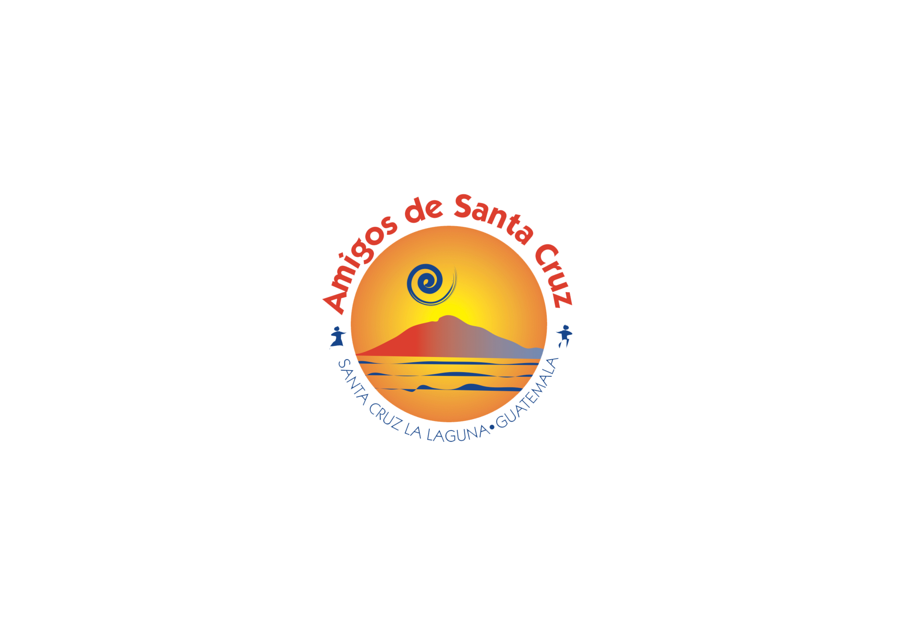
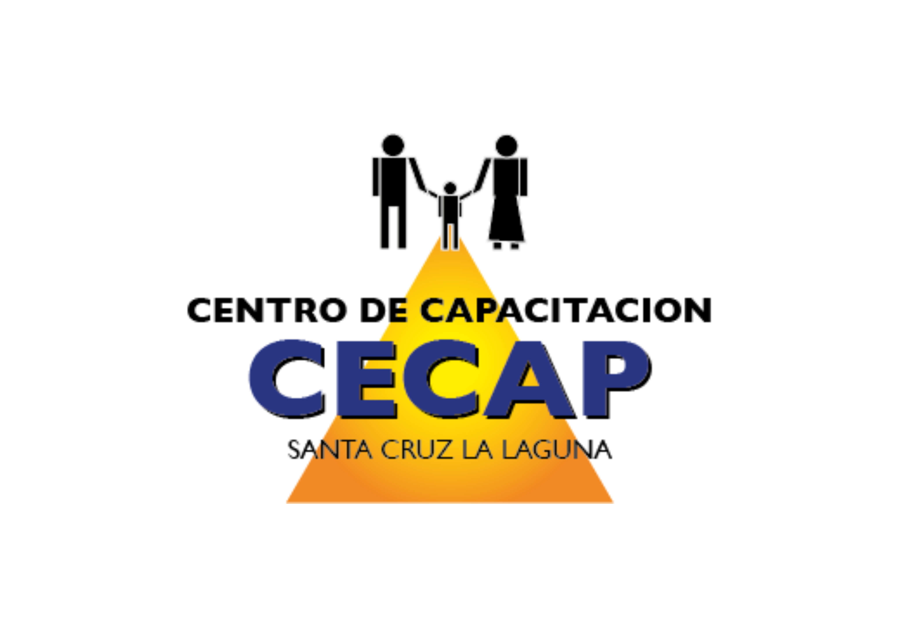

Santa Cruz La Laguna, municipio rural del departamento de Sololá, presenta indicadores socioeconómicos por debajo de las medias departamental y nacional. Con un Índice de Desarrollo Humano Municipal (IDHM) de 0.57, frente al 0.63 nacional, y altos niveles de pobreza total (89.3%) y extrema (42.3%), el municipio enfrenta desafíos estructurales significativos. La población, mayoritariamente maya cakchiquel (100%), concentrada en áreas rurales (78%), experimenta múltiples privaciones reflejadas en su Índice de Privaciones Multidimensionales (IP-M) de 0.47, superior al promedio nacional de 0.32.
El 100% de la población de Santa Cruz La Laguna se autoidentifica como maya cakchiquel.
| Componente | Valor | Observación |
|---|---|---|
| IDHM General | 0.57 | Por debajo del promedio nacional (0.63) |
| Componente de Educación | 0.38 | Componente más bajo |
| Componente de Salud | 0.87 | Componente más alto |
| Componente de Nivel de vida | 0.57 | En nivel intermedio |
| Indicador | Valor |
|---|---|
| Índice de Privaciones Multidimensionales (IP-M) | 0.47 |
| Índice de Competitividad Local (ICL) | 0.51 (posición 6 de 19 municipios en Sololá) |
| Ranking de Gestión Municipal | 0.43 sobre 1 (posición 18 de 19) |
El 47% de la población de Santa Cruz La Laguna enfrenta al menos 5 privaciones simultáneas en su calidad de vida, indicando necesidades básicas insatisfechas en múltiples dimensiones.
| Nivel | Estudiantes | Variación (desde 2020) |
|---|---|---|
| Preprimaria | 629 | N/D |
| Primaria | 509 | +7% |
| Básico | 1,264 | +2.4% |
| Diversificado | 37 | -38% |
La disminución del 38% en estudiantes de nivel diversificado desde 2020 representa una tendencia preocupante, afectando las oportunidades futuras de la juventud del municipio.
| Indicador | Total | Niños | Niñas |
|---|---|---|---|
| Desnutrición crónica | 52.9% | 55.4% | 50.2% |
| Desnutrición aguda | 0.3% | N/D | N/D |
| Sobrepeso | 3.8% | 4.0% | 1.7% |
| Obesidad | 0.9% | 1.2% | 0.5% |
Casos evaluados: N = 758 (Censo Nutricional, 2025)
Existe una marcada disparidad en los niveles de desnutrición crónica entre comunidades, con valores críticos superiores al 70% en Laguna Seca, Chuitzanchaj y Pajomel, que requieren intervención prioritaria.
Principalmente de subsistencia: cultivo de maíz, frijol y aguacate (actividad principal en zonas como Chuitzanchaj y Tzununá)
Turismo comunitario: limitado pero en crecimiento, representa una oportunidad de diversificación
Artesanías y oficios: carpintería, albañilería y costura como fuentes alternativas de ingreso
| Cultivo | Número de hogares productores |
|---|---|
| Maíz | 243 |
| Frijol | 211 |
| Frutas, verduras u otros productos | 91 |
Solo el 33.8% de hogares productores lograron cubrir la reserva mínima anual de granos básicos en el período 2021-2022, evidenciando vulnerabilidad en la seguridad alimentaria del municipio.
| Programa | Beneficiarios/Monto |
|---|---|
| Asistencia alimentaria | 2,261 beneficiarios |
| Estipendios para huertos familiares | Más de Q90,000 otorgados |
| Seguro agropecuario | 157 beneficiarios |
| Programa del Adulto Mayor (acumulado 2020-2023) | 5,792 personas con Q2,603,100 en transferencias |
El 44% de los hogares tienen más de 3 personas por dormitorio, reflejando condiciones de hacinamiento que afectan la calidad de vida y salud.
| Servicio | Cobertura/Situación |
|---|---|
| Agua entubada | Solo el 36% tiene acceso por red entubada dentro de la vivienda |
| Saneamiento | Predominio de letrinas rudimentarias |
| Electricidad | 85.3% de cobertura, limitada en comunidades como Laguna Seca |
| Internet y computadoras | Prácticamente ausentes |
| Viviendas subsidiadas | 99 familias beneficiadas entre 2022 y 2023 |
Santa Cruz La Laguna ocupa la posición 18 de 19 municipios en Sololá en el Ranking de Gestión Municipal (0.43 sobre 1), evidenciando importantes desafíos institucionales.
Santa Cruz La Laguna evidencia un patrón estructural de exclusión social y económica, caracterizado por:
La educación presenta la mayor debilidad estructural con una tasa de alfabetismo de solo 59.71% y una tendencia negativa alarmante en el nivel diversificado (-38% entre 2020-2023).
Con 89.3% de pobreza total y 42.3% de pobreza extrema, los indicadores están muy por encima de los promedios nacionales, reflejando condiciones socioeconómicas críticas.
Con 52.9% de prevalencia general y hasta 81% en comunidades específicas como Laguna Seca, la situación nutricional de la niñez requiere intervención urgente.
Limitaciones en acceso a agua potable (64% sin acceso adecuado), saneamiento básico y vivienda digna agravan las condiciones de vida.
Dependencia de agricultura de subsistencia con baja productividad (solo 33.8% de hogares alcanzan la reserva mínima anual de granos básicos) y escaso desarrollo de sectores alternativos.
El municipio necesita una intervención integral que combine: